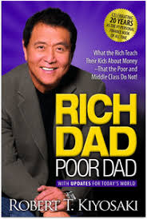
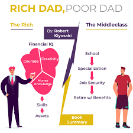

“Rich Dad, Poor Dad” is the story of two fathers; one has a collection of degrees and diplomas and the other is a high school drop-out. When the overqualified father dies, he will leave next to nothing behind, and even a few unpaid bills here and there. The school drop-out father will become one of the richest men in Hawaii and will pass on an empire to his son. Throughout his life, the former would say things like “I can’t afford to treat myself to this or that”, while the latter would say: “How can I treat myself?”

Robert Kiyosaki, author of Rich Dad Poor Dad, had two main influential fathers in his life.

Robert Kiyosaki, author of Rich Dad Poor Dad, had two main influential fathers in his life.